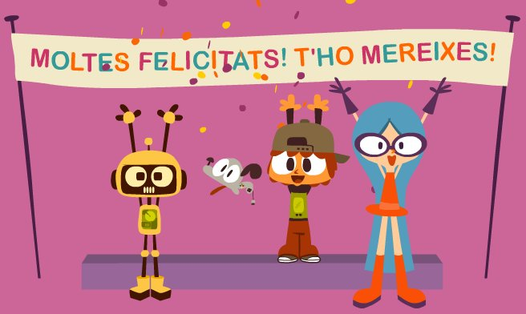
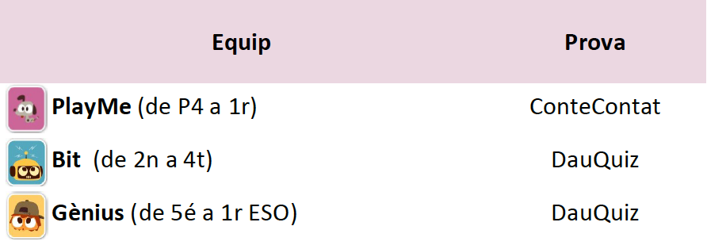

Objectiu: Llegir i passar-s’ho bé
Apunta-t’hi!
A partir del 20 de setembre afegeix-te a l’equip dels Superlectors. Et donarem la teva cartilla perquè puguis mesurar el teu ajut.
El joc començarà el 4 d’octubre i finalitzarà el 26 de novembre.
Poden participar-hi nens i nenes de 4 a 12 anys (nascuts a partir de 2017) que tinguin el carnet de biblioteques municipals.
Al desembre farem la Festa dels Superlectors carregada de sorpreses!
Us mantindrem informats.
ACTUALITZACIÓ 29/11/21: Inscripcions tancades.
Com s’hi juga?
- Has d’estar apuntat en un dels tres equips que conformen l’equip dels Superlectors 2021:

- Agafa un llibre en préstec de la biblioteca i llegeix-te’l.
- Després hauràs de passar per la biblioteca a fer la prova assignada al teu equip. Si la superes, aconseguiràs una espelma que ajudarà a decorar el pastís d’aniversari.
- Podràs participar-hi un cop per setmana (de dilluns a divendres). Entre els llibres que has llegit podràs fer una recomanació del que més t’hagi agradat i fer la teva aportació per al regal de la biblioteca.
- A mesura que decorem el pastís també podràs resoldre reptes, així aconseguiràs regals i més espelmes.
- ACTUALITZACIÓ 29/11/21: Inscripcions tancades.